Unit 4 · Statistics (1) · Teacher guide
How to use the slides
Hello! This short guide shows you how to teach with the Unit 4 slides. It takes about five minutes to read. There is nothing to install.
- 4 lessons, each with exercises
- Exercises students do on the board
- Projector, touch board or iPad
- Chrome or Safari
The slides
mmjx2013-png.github.io/aia-slides/m1-statistics
Tip: save the link as a bookmark.
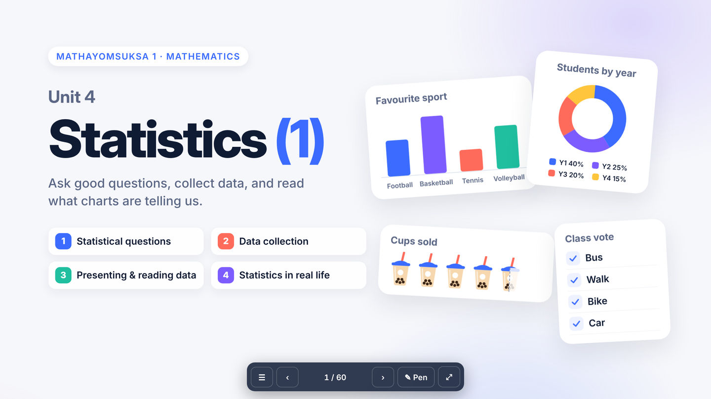
1 · Quick start
Ready in five steps
- 1
Open the link
Open the slides in Chrome or Safari. Do it before class, while the Wi-Fi is good.
- 2
Show it on the big screen
Connect the projector or the touch board. Choose Duplicate (or Mirror), so the class sees what you see.
- 3
Go full screen
Press F, or tap ⤢ on the bar at the bottom.
- 4
Move with the arrows
Press → to go forward. Press ← to go back. A presentation clicker works too.
- 5
Find a lesson
Press M, or tap ☰, and choose the lesson.
Clicking or tapping a slide never changes the slide. This is on purpose. A student at the board can't skip ahead by mistake.
2 · Moving through the lesson
Keys, clicker and buttons
Only these change the slide
←→
Arrow keys on the keyboard.
◀▶
A presentation clicker. (It sends Page Up and Page Down.)
‹›
The back and next buttons on the bar at the bottom.
Space, Enter and Backspace do nothing. Clicks, taps and swipes on the slide do nothing. So nothing moves by accident.
The bar at the bottom
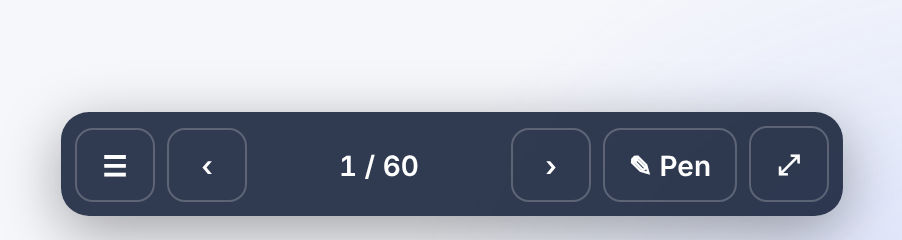
- 1☰ Lesson menu. Or press M.
- 2‹ Back. Same as ←.
- 3Slide number: the slide you are on, out of how many.
- 4› Next. Same as →.
- 5✎ Pen Pen on and off. Or press P.
- 6⤢ Full screen on and off. Or press F.
With a mouse, the bar hides after a few seconds. Move the mouse and it comes back. On a touch screen, it stays.
Steps: answers come one at a time
Many slides show things step by step. Each → shows the next step: an answer, a hint or the working. When all the steps are out, the next → goes to the next slide. ← takes the last step away again.
The bar at the bottom tells you where you are, for example 12 / 67 · step 1 of 3: slide 12, and two more steps are still hidden on this slide.
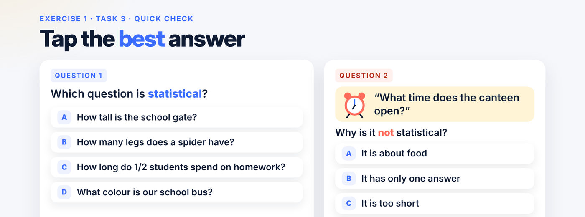
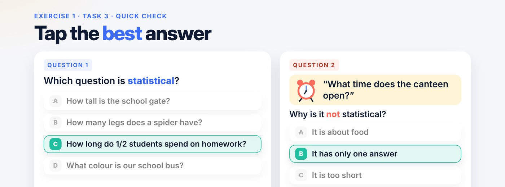
There is no step counter. If you are not sure, just press →. Nothing is skipped: when the steps are done, the next slide comes.
Jump to a lesson
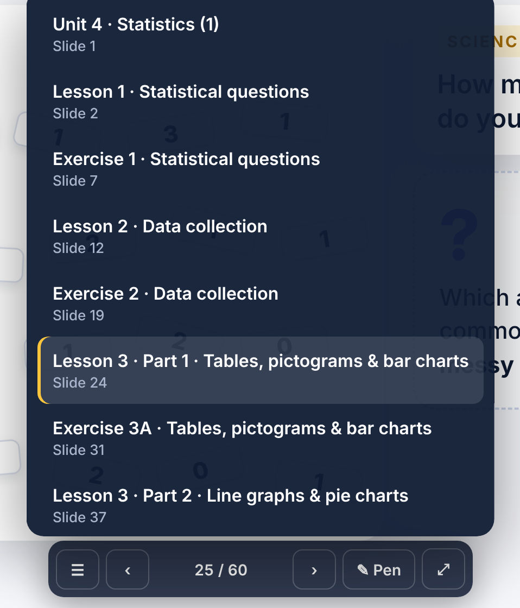
- 1Tap ☰ or press M to open the menu.
- 2The lesson you are in now has a yellow mark. Tap a lesson to go there.
The main parts, in the same order as the book. Each menu entry shows its slide number.
- TitleUnit 4 · Statistics (1)
- Lesson1 · Statistical questions
- ExerciseExercise 1
- Lesson2 · Data collection
- ExerciseExercise 2
- Lesson3 · Part 1 · Tables, pictograms and bar charts
- ExerciseExercise 3A
- Lesson3 · Part 2 · Line graphs and pie charts
- ExerciseExercise 3B
- Lesson4 · Statistics in real life
- ExerciseExercise 4
- EndSummary, vocabulary and unit review
- With a keyboard: ↑ ↓ move in the menu, Enter opens a lesson, Esc closes the menu.
- Home goes to the first slide. End goes to the last.
- Open one slide straight away: add # and the slide number to the end of the link. …/m1-statistics/#25 opens slide 25.
3 · Students at the board
The pen and the answer tools
Students can write on any slide with the pen. Exercise slides also have answer tools: students tap, type, drag or write right on the slide.
The pen
How: press P or tap ✎ Pen. To stop, press P again, press Esc, or tap ✕ on the pen bar.
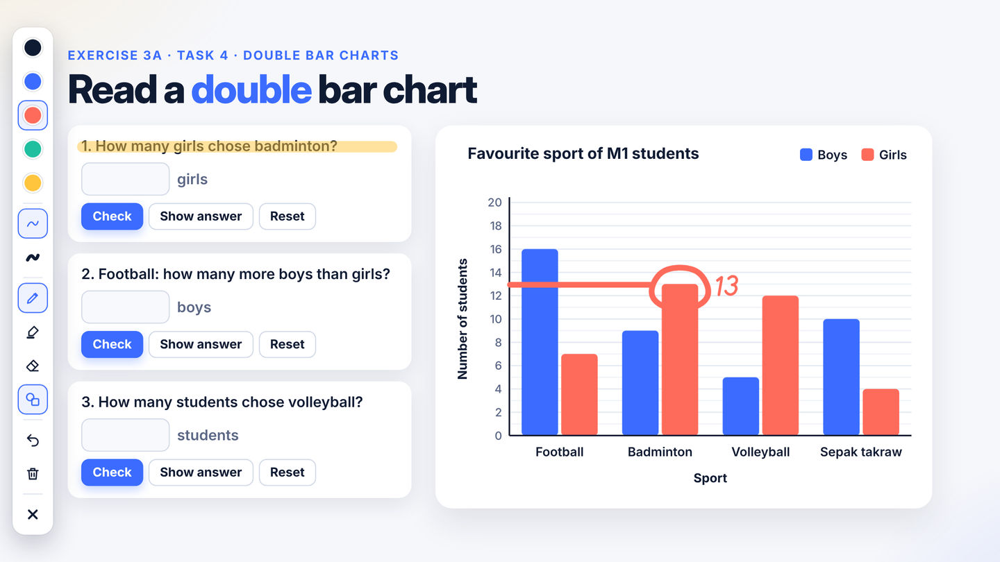
- 1The pen bar opens on the left.
- 2The highlighter marks words or numbers.
- 3A hand-drawn loop and line, made neat by Auto shapes.
- 4Writing and numbers stay as they are.
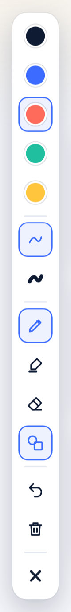
- Drawings stay on their slide. Go back, and they are still there.
- Reloading the page clears all the drawings.
- The arrow keys still work while the pen is on.
- While the pen is on, a tap draws. Turn the pen off before students tap the answer tools.
Auto shapes
Auto shapes is on when you start. A wobbly line becomes straight. A loop becomes a neat circle, rectangle or triangle. Small writing stays as it is. Tap the shapes button on the pen bar to turn it off.
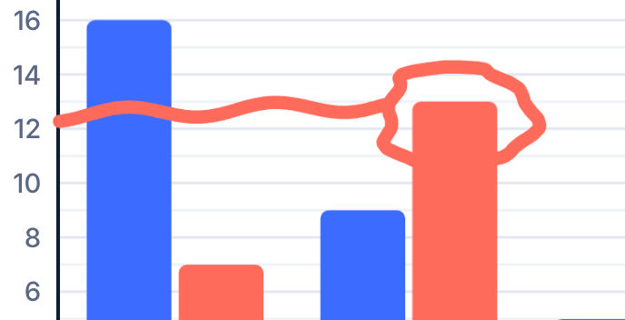
The answer tools
Each tool has a short hint on it, so students know what to do.
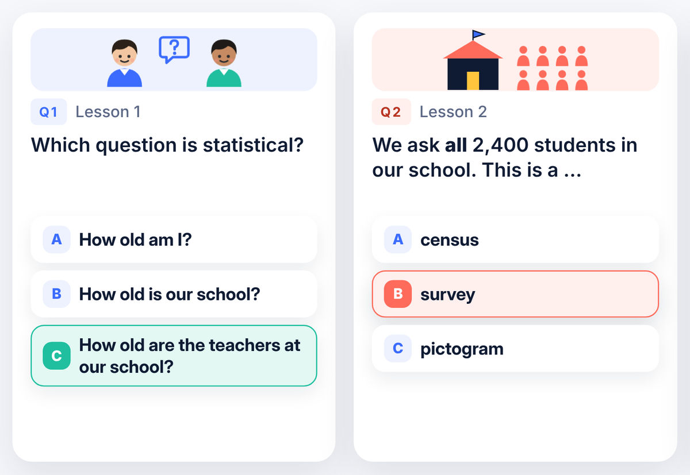
1Tap a choice
How: tap a letter. Right turns green. Wrong flashes red: try again. Press → to show the answer to everyone.
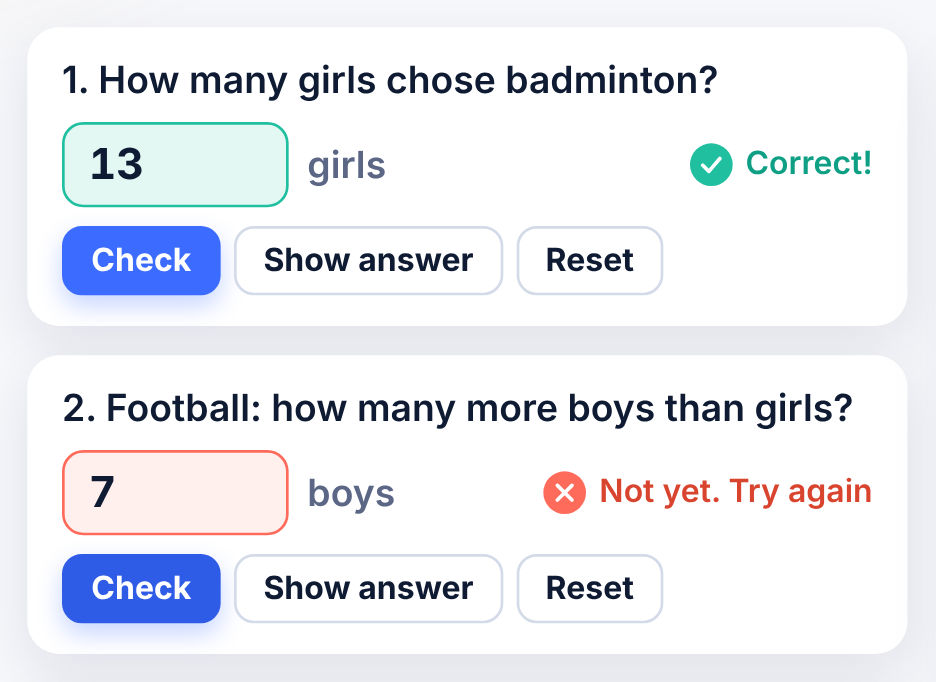
2Type an answer
How: 1 tap the box and type. 2 Tap Check or press Enter. 3 A green tick, or “Not yet”.
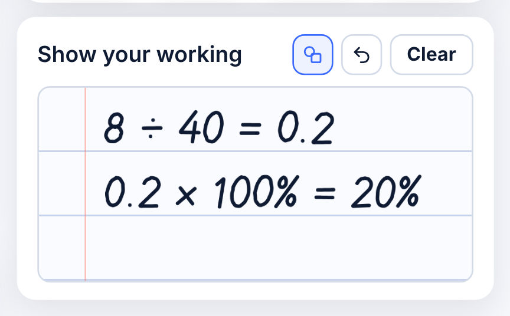
3Write with a finger
How: write in the lined box with a finger, a stylus or the mouse. 1 Auto shapes, 2 Undo, 3 Clear.
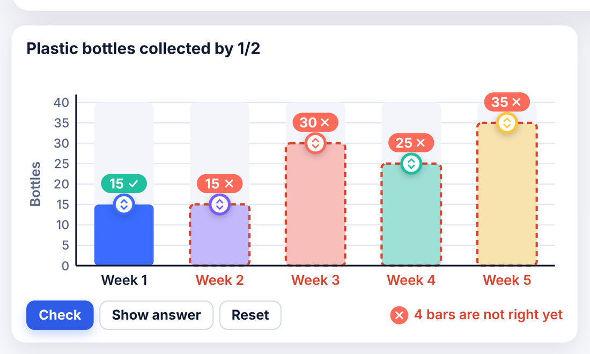
4Fix a bar chart
How: drag the top of each bar up or down to the right number. Then tap Check.
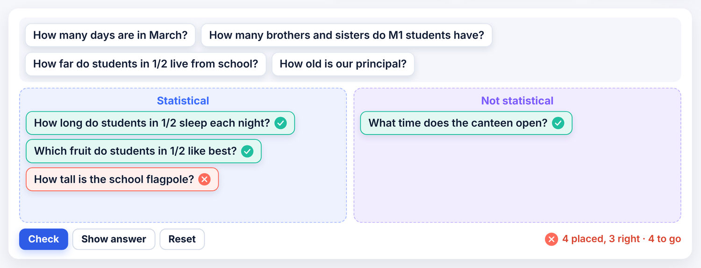
5Sort the cards
How: drag each card into the right box. Or tap a card, then tap a box. Then tap Check.
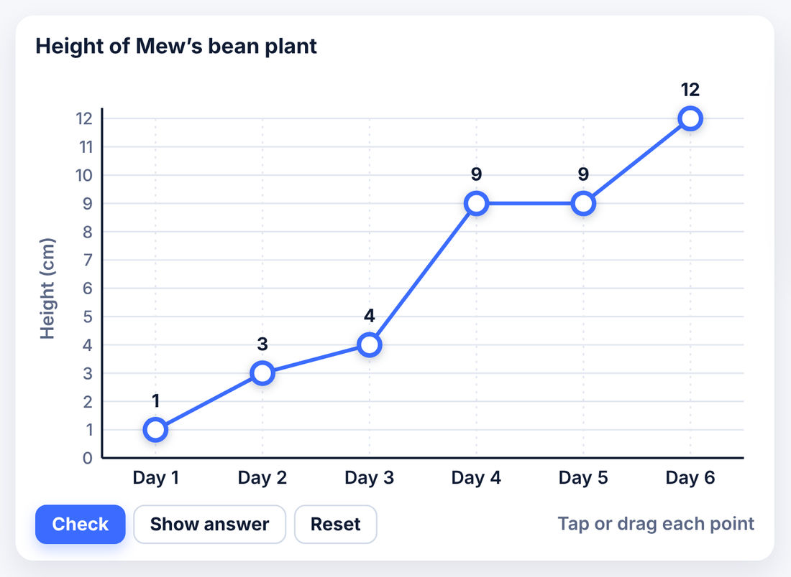
6Fix a line graph
How: drag each point up or down, or tap where it should go. The line follows. Then tap Check.
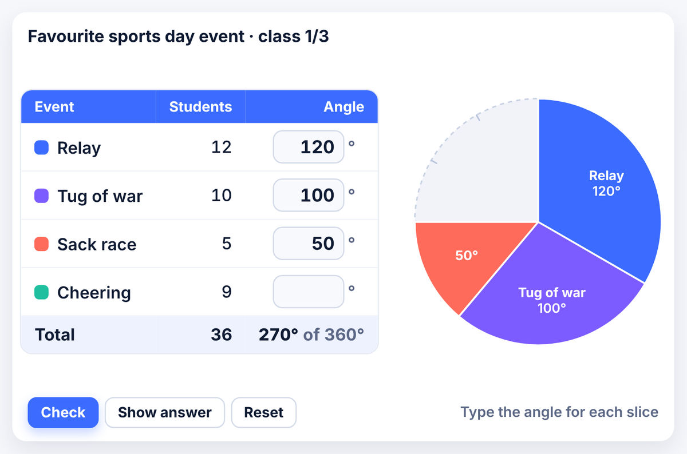
7Fill in a pie chart
How: 1 type the angle for each slice. The pie draws itself. Then tap Check.
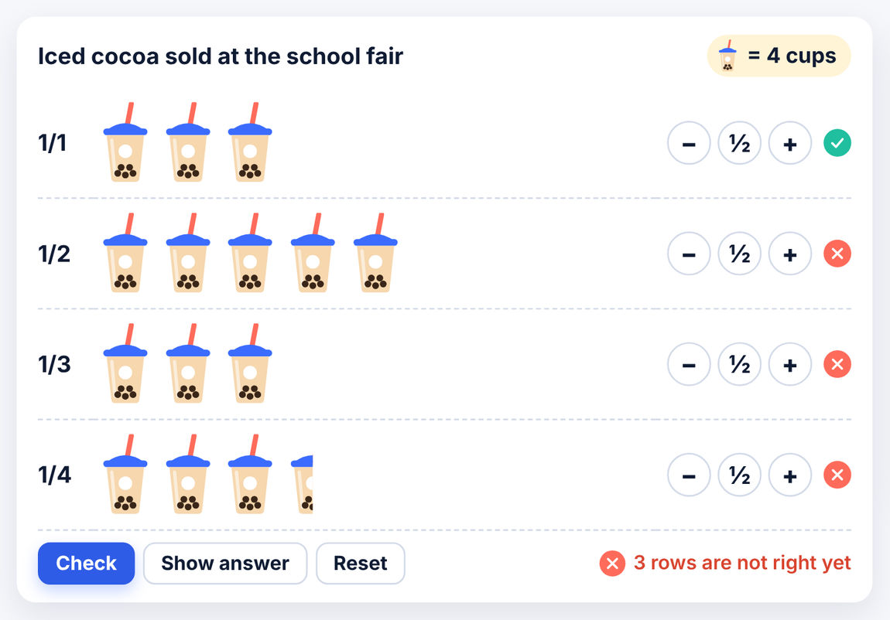
8Build a pictogram
How: 1 tap + to add an icon, ½ for half an icon, − to take one away. Then tap Check.
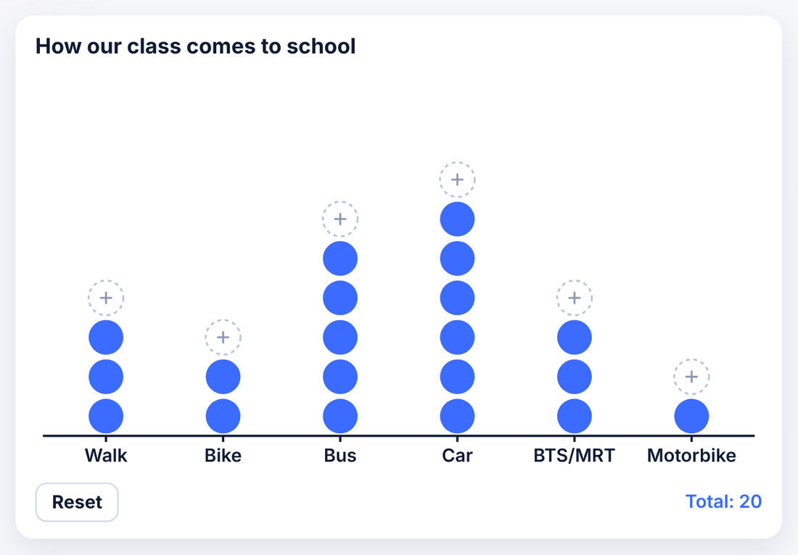
9Make a dot plot
How: tap above a label to add a dot. Tap a dot to take it away. The total shows at the bottom.
Check, Show answer and Reset
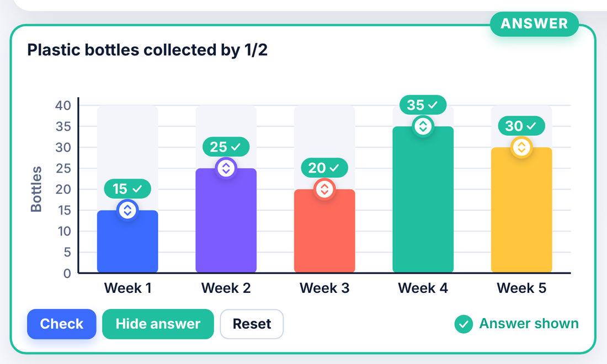
- 1A green frame and an ANSWER tab: this is the key, not the student's work.
- 2The button now says Hide answer.
- 3“Answer shown” tells you the key is on the screen.
| Check | Marks the student's own work. Green tick: right. Red cross: not yet. |
|---|---|
| Show answer | Shows the right answer on the tool. The student's work is kept safe. |
| Hide answer | The same button. It brings the student's work back. |
| Reset | Clears the tool for the next student. |
- Tap-a-choice questions have no buttons. Press → to reveal.
- Writing boxes have Undo and Clear, but no Check. You check them with the class.
- The dot plot is for your own class data, so it has only Reset.
4 · Teaching routine
One exercise slide, step by step
Students show their thinking first. You reveal the answer last.
Step 1
Show
Press → to open the slide. Read the question together. Only the question and the tool are on screen.
Step 2
Work
Students work alone or in pairs, in their books or on paper.
Step 3
Present
A student comes to the board. They use the tool or the pen, and explain how they got it.
Step 4
Check
Tap Check. Green: well done! Red: ask the class to help, then try again.
Step 5
Reveal
Press → to show the answer and the working, one step at a time. Talk through each step.
Another student? Tap Reset. A student is stuck? Tap Show answer, then Hide answer to go back to their work. Ready to move on? Press →.
5 · Touch board or iPad
Using it by touch
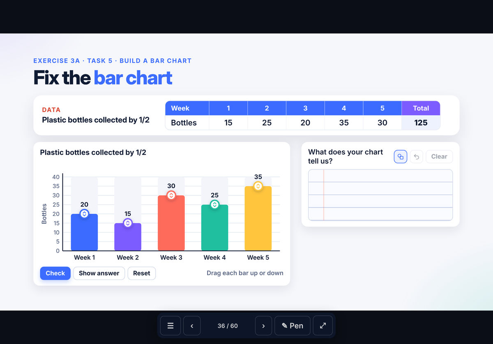
- Tap the screen once. The bar at the bottom appears and stays.
- Use ‹ and › on the bar to change slides. Swiping does not change slides.
- Fingers and styluses work for the pen and all the answer tools. With an Apple Pencil, lines get thicker when you press harder.
- Turn the iPad sideways. Dark bands above and below the slide are normal. The slide keeps its shape.
- Some iPads don't allow full screen for web pages. That's OK: the slide still fits the screen.
- If the page zooms in by mistake, pinch with two fingers to zoom back out.
- Turn the pen off before students tap the answer tools.
- A touch board with a computer? A keyboard or a clicker makes moving easier.
6 · Troubleshooting
If something goes wrong
I click the slide and nothing happens.
That's on purpose. Use → on the keyboard, the clicker, or › on the bar.
The arrow keys don't work.
A student may still be typing in an answer box. Tap an empty part of the slide, then press →. Is the lesson menu open? Press Esc. Still nothing? Click the slide once, so the browser window is active.
The slide is small, or I can see the browser bar.
Press F or tap ⤢ for full screen. Press Esc to leave full screen.
The projector cuts off the edges.
Open the projector's menu. Set the picture size (Aspect) to Auto or 16:9, and turn off Overscan. On the computer, choose Duplicate (Windows key + P) or Mirror (Mac).
The bar at the bottom has gone.
Move the mouse. On a touch screen, tap once.
A tap draws a line instead of choosing an answer.
The pen is on. Press P, or tap ✕ on the pen bar.
Last class's answers are still on the slides.
Reload the page. All answers and drawings clear, and you stay on the same slide. Or tap Reset on each tool.
The link opened inside LINE.
Open it in Chrome or Safari instead. In LINE, use the menu (⋯ or the share button) and choose to open it in the browser.
Something looks wrong, or a tool doesn't respond.
Use Chrome or Safari, and keep it up to date. Old browsers may not work well.
The school Wi-Fi is slow.
Open the link before class. When the first slide shows, the whole lesson has loaded. It keeps working if the Wi-Fi drops. Don't reload while you are offline.
7 · The answer-key site
For you only
The answer keys for the book are on a separate website. It has a password, and it is only for the teacher.
- Link
- Placeholder · to be added by the owner[ ANSWER-KEY LINK GOES HERE ]
- Password
- The owner will give it to you. It is not written in this guide.
- Keep the link and the password private, so students can't see the answers before class.
- Open it on your own phone or laptop when you prepare.
8 · Cheat sheet
Keys and buttons
Unit 4 slides · keep it next to the computer